Operating Documentation
Direction 5500113, Rev# 3
Module Version 4.0, Version Date 11/7/08
Operating Documentation |
| ||||
| ELECTRIC SHOCK HAZARD. | ||||
| CAPACITORS IN THE POWER Amplifier modules store enough energy to cause a dangerous shock. | ||||
| allow capacitors to drain for at least 10 minutes after ac power has been turned off. |
| ||||
| Risk of personal injury. | ||||
| Some components (Power Supply) are heavy. | ||||
| Use additional personnel and safe lifting methods as advised. Follow stated safety procedures for each component. |
| ||||
| Risk of personal injury. | ||||
| Power Supply has sharp edges. | ||||
| Wear cut-resistant gloves while handling power supply. |
| Condition | Reference | Effectivity | ||||
|---|---|---|---|---|---|---|
Install anti-tip legs to both sides of the MNS cabinet (see Illustration 1). The anti-tip legs are strapped inside the rear of the cabinet to the left side. Remove the anti-tip legs from the cabinet and align with screw openings at bottom of the cabinet. Screw legs onto either side. Illustration 1: MNS Anti-Tip Legs Installed
| - | - |
This section displays the location of MNS FRUs in the MNS cabinet from a front and rear view.
MNS cabinet front view of FRU components (see Illustration 2). Please refer to the table below the illustration for component definition.
MNS cabinet rear view of FRU components (see Illustration 3). Please refer to the table below the illustration for component definition.
Refer to Illustration 2 and Illustration 3 for FRU locations.
Install anti-tip legs to both sides of the MNS cabinet (see Illustration 1). The anti-tip legs are strapped inside the rear of the cabinet to the left side. Remove the anti-tip legs from the cabinet and align with screw openings at bottom of the cabinet. Screw legs onto either side.
Open the rear rack cabinet door.
Disconnect the system power cable at J12 on the power supply (see Illustration 4).
Illustration 4: AMT System Control Module - Cabinet Connections
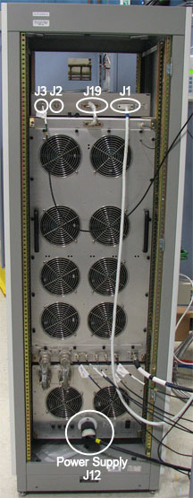
Disconnect cable J3 (RF IN) on the rear of the system control module (see Illustration 4).
Disconnect the system interface cable at J19(see Illustration 4).
Disconnect the RF interface cable at J1(see Illustration 4).
Working from the front of the system control module, carefully remove the four large mounting screws that attach the module to the rack. Retain the screws; set them aside in a safe place (see Illustration 5).
Illustration 5: AMT Location in MNS Cabinet
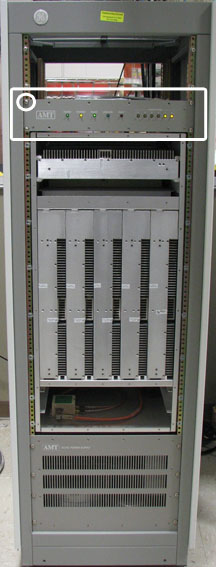
Working from the front, carefully slide the control module out of the front of the rack.
Set the removed unit aside in a safe place.
Remove the replacement system control module from its packaging and inspect it for damage.
Working from the front of the rack, align the system control module with the slides and carefully slide it into the rack.
Reattach the system control module to the rack using the four large screws removed in Step 8.
Working from the rear, reconnect the RF interface cable at J1(see Illustration 4).
Reconnect the system interface cable at J19(see Illustration 4).
Reconnect cable at J3 (RF IN)(see Illustration 4).
Working from the front of the rack, reconnect the system power cable at J12 on the power supply (see Illustration 4).
Refer to Illustration 2 and Illustration 3 for FRU locations.
Install anti-tip legs to both sides of the MNS cabinet (see Illustration 1). The anti-tip legs are strapped inside the rear of the cabinet to the left side. Remove the anti-tip legs from the cabinet and align with screw openings at bottom of the cabinet. Screw legs onto either side.
Working from the front of the rack, carefully remove the two mounting screws that attach the driver module to the rack. The screws are located below the driver module air intake vents (see Illustration 6). Retain the screws; set them aside in a safe place.
Open the rear rack cabinet door.
Disconnect the system power cable at J12 on the power supply (see Illustration 4).
Disconnect the fan AC power cable at J17 at the rear of the cabinet (see Illustration 7).
Illustration 7: MNS Cabinet - AC Power Cable
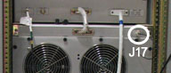
Loosen the 20 thumbscrews that attach the fan panel to the rack.
Carefully allow the top of the fan panel to pivot away from the cabinet, then carefully lift the fan panel up and away from the rack.
Use a 5/16 in. wrench to remove the RF cable at J25(see Illustration 8).
Illustration 8: RF Cables on Driver Module
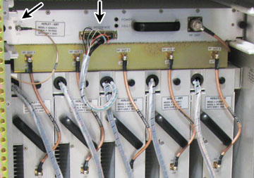
Remove J26 RF interface cable (see Illustration 8).
Carefully remove the RF output cables 1 through 5 from J27-1 through J27-5 on the driver module .
Illustration 9: RF Output Cables
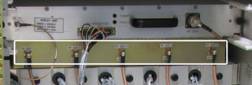
Loosen two thumbscrews that attach the driver module to the rack (see Illustration 10).
Illustration 10: Driver Module - Rack Thumbscrew
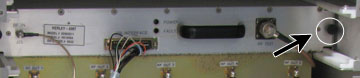
Carefully slide the driver module out of the rear of the rack..
Set the removed unit aside in a safe place.
Remove the replacement driver module from its packaging and inspect it for damage.
Align the driver module with the slides and carefully slide it into the rack.
Tighten the two thumbscrews that attach the driver module to the rack (see Illustration 10).
Reattach RF output cables 1 through 5 to J27-1 through J27-5 on the driver module (see Illustration 9).
Reattach the RF interface cable to J26(see Illustration 8).
Use a 5/16 in. wrench to reattach the RF cable to J25(see Illustration 8).
Carefully lift the fan panel into place and position it on the rack.
Tighten the 20 thumbscrews that attach the fan panel to the rack.
Reconnect the fan AC power cable to J17 at the rear of the cabinet (see Illustration 7).
Reconnect the system power cable to J12 on the power supply (see Illustration 4).
Insert the two mounting screws that attach the driver module to the rack. The screws are located on the front of the cabinet and below the driver module air intake vents (see Illustration 6).
| ||||
| Whenever the PEN cabinet LOTO is removed, the Exciter board requires 20 minutes of power-up time before scanning. | ||||
Refer to Illustration 2 and Illustration 3 for FRU locations.
Install anti-tip legs to both sides of the MNS cabinet (see Illustration 1). The anti-tip legs are strapped inside the rear of the cabinet to the left side. Remove the anti-tip legs from the cabinet and align with screw openings at bottom of the cabinet. Screw legs onto either side.
Open the rear rack cabinet door.
| ||||
| ELECTRIC SHOCK HAZARD. | ||||
| CAPACITORS IN THE POWER AMPLIFIER MODULES STORE ENOUGH ENERGY TO CAUSE A DANGEROUS SHOCK. | ||||
| ALLOW THE CAPACITORS TO DRAIN FOR LEAST 10 MINUTES AFTER AC POWER HAS BEEN TURNED OFF. |
Disconnect the system power cable at J12 on the power supply (see Illustration 4).
Disconnect the fan AC power cable at J17 at the rear of the cabinet (see Illustration 7).
Loosen the 20 thumbscrews that attach the fan panel to the rack.
Carefully allow the top of the fan panel to pivot away from the cabinet, then carefully lift the fan panel up and away from the rack.
Disconnect all the power amplifier interface cables at connectors J29-A through J29-E or for an individual module replacement, disconnect only that module's connectors (see Illustration 11).
Illustration 11: RF Cables for Power Amplifier
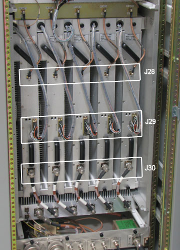
Disconnect the RF input cables at J28-A through J28-E or for an individual module replacement, disconnect only that module's cables with a 5/16 in. wrench. See Illustration 11 and Illustration 12.
Illustration 12: Removing RF Input Cables
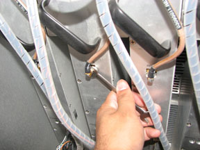
Disconnect the RF output cables at J30-A through J30-E or for an individual module replacement, disconnect only that module's RF output cables (see Illustration 11).
Working from the front of the rack, remove the two corresponding screws that attach the power amplifier module to the front panel (see Illustration 13). The screws are located adjacent to the air intake vents. Retain the screws.
At the rear of the cabinet, loosen the two thumbscrews that attach the power amplifier.
Working from the rear of the rack, carefully slide the power amplifier module out of the rack (see Illustration 14).
Illustration 14: Removing the Power Amplifier Module
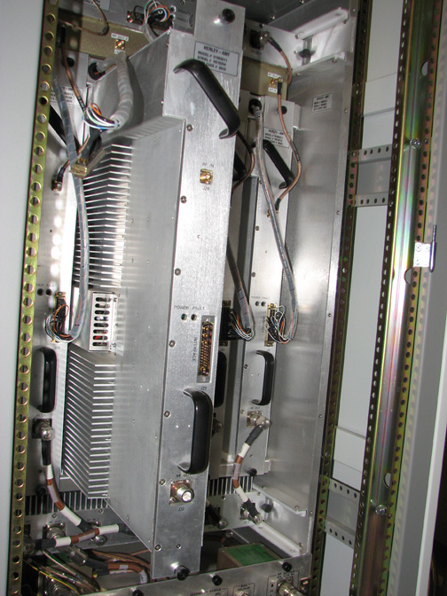
Set the removed unit aside in a safe place.
Remove the replacement amplifier module from its packaging and inspect it for damage.
Working from the rear of the rack, align the power amplifier module with the slides and carefully slide it into the rack.
Working from the front of the rack, reattach the power amplifier module to the rack using the two screws removed in Step 11.
Reattach the RF output cables at J30-A through J30-E(see Illustration 11).
Reattach the RF input cables at J28-A through J28-E(see Illustration 11).
Reconnect the power amplifier interface cables at J29-A through J29-E(see Illustration 11).
| ||||
| RISK OF PERSONAL INJURY. | ||||
| THE FAN PANEL IS HEAVY. | ||||
| USE SAFE LIFTING METHODS. DO NOT ALLOW THE FAN PANEL TO FALL. |
Carefully lift the fan panel into place and position it on the rack.
Tighten the 20 thumbscrews that attach the fan panel to the rack.
Reconnect the fan AC power cable to J17 at the rear of the cabinet (see Illustration 7).
Reconnect the system power cable to J12 on the power supply (see Illustration 4).
| ||||
| Whenever the PEN cabinet LOTO is removed, the Exciter board requires 20 minutes of power-up time before scanning. | ||||
Perform 8kW 3.0T MNS Amplifier Calibration.
Refer to Illustration 2 and Illustration 3 for FRU locations.
Install anti-tip legs to both sides of the MNS cabinet (see Illustration 1). The anti-tip legs are strapped inside the rear of the cabinet to the left side. Remove the anti-tip legs from the cabinet and align with screw openings at bottom of the cabinet. Screw legs onto either side.
Open the rear rack cabinet door.
Disconnect the system power cable at J12 on the power supply (see Illustration 4).
Disconnect the fan AC power cable at J17 at the rear of the cabinet (see Illustration 7).
Loosen the 20 thumbscrews that attach the fan panel to the rack.
Carefully allow the top of the fan panel to pivot away from the cabinet, then carefully lift the fan panel up and away from the rack.
Disconnect the thermostat cable at J35(see Illustration 15).
Illustration 15: Connections on Combiner
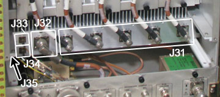
Use a 5/16 in. wrench to remove the RFL RF cable from J33(see Illustration 15).
Use a 5/16 in. wrench to remove the FWD RF cable from J34(see Illustration 15).
Disconnect the RF output cable from J32(see Illustration 15).
Disconnect RF input cables 1 through 5 from J31-1 through J31-5(see Illustration 15).
Loosen the two thumbscrews that attach the combiner to the cabinet.
Working from the rear of the rack, carefully slide the combiner out of the rear of the rack.
Set the removed unit aside in a safe place.
Remove the replacement combiner from its packaging and inspect it for damage.
Working from the rear of the rack, align the combiner with the slides and carefully slide it into the rack.
Working from the front of the rack, tighten the two thumbscrews that attach the combiner to the cabinet.
Reconnect RF input cables 1 through 5 to connectors J31-1 through J31-5(see Illustration 15).
Reconnect the RF output cable to J32(see Illustration 15).
Use a 5/16 in. wrench to reconnect the FWD RF cable to J34(see Illustration 15).
Use a 5/16 in. wrench to reconnect the RFL RF cable to J33(see Illustration 15).
Reconnect the thermostat cable to J35(see Illustration 15).
Tighten the 20 thumbscrews that attach the fan panel to the rack.
Reconnect the fan AC power cable to J17 at the rear of the cabinet (see Illustration 7).
Reconnect the system power cable to J12 on the power supply (see Illustration 4).
| ||||
| Whenever the PEN cabinet LOTO is removed, the Exciter board requires 20 minutes of power-up time before scanning. | ||||
Refer to Illustration 2 and Illustration 3 for FRU locations.
| ||||
| Risk of personal injury. | ||||
| Power Supply has sharp edges. | ||||
| Wear cut-resistant gloves while handling power supply. |
Install anti-tip legs to both sides of the MNS cabinet (see Illustration 1). The anti-tip legs are strapped inside the rear of the cabinet to the left side. Remove the anti-tip legs from the cabinet and align with screw openings at bottom of the cabinet. Screw legs onto either side.
Open the rear rack cabinet door.
Disconnect the system power cable at J12 on the power supply (see Illustration 16).
Illustration 16: MNS Power Supply Connections
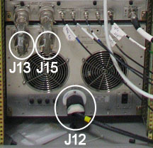
Remove the power supply low-voltage interconnect cables from J13 and J15(see Illustration 16).
Remove the protective earth grounding cable from the grounding stud.
Remove the two screws that attach the power supply to the rack. The screws are located in the lower left and right corners of the power supply (see Illustration 17). Retain the screws.
Illustration 17: Removing Screws
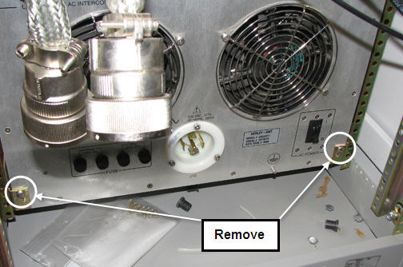
On the front of the MNS cabinet, remove the eight large screws that attach the power supply to the rack (see Illustration 18). Retain the screws; set them aside in a safe place.
Illustration 18: Location of Screws to Remove
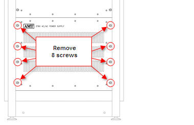
Remove 16 screws securing front cover of power supply.
| ||||
| LIFTING HAZARD. | ||||
| THE POWER SUPPLY IS HEAVY. | ||||
| slidING THE POWER SUPPLY out of the cabinet REQUIRES four FIELD ENGINEERS. |
Working from the front, with the help of three additional field engineers, carefully slide the power supply out of the front of the rack.
Illustration 19: Power Supply Partially Removed
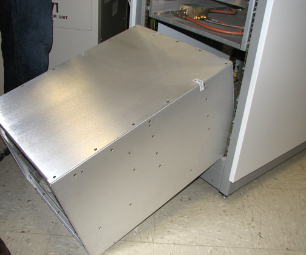
With additional personnel, set the removed unit aside in a safe place.
With additional personnel, remove the replacement power supply from its packaging and inspect it for damage.
Working from the front, with the help of additional persons, carefully slide the replacement power supply into the front of the rack.
Reattach the two screws, removed in Step 7, that attach the power supply to the rack. The screws are located in the lower left and right corners of the power supply on the back side of the MNS cabinet. Assure that the power supply FRU is pushed in from the front.
Re-attach the front cover of the power supply using the 16 screws previously removed.
Reattach the eight large screws, removed in Step 8, that attach the power supply to the front of the rack.
Reattach the protective earth grounding cable to the grounding stud.
Reattach the power supply low-voltage interconnect cables to J13 and J15(see Illustration 16).
Reconnect the system power cable to J12 on the power supply (see Illustration 16).
Close the rear rack cabinet door.
| ||||
| Whenever the PEN cabinet LOTO is removed, the Exciter board requires 20 minutes of power-up time before scanning. | ||||
The fan module and the internal power supply are equipped with replaceable fuses. The fans are equipped with two 250 volt, 8-amp , time-delay type 8AT fuses. The internal power supply is equipped with two 250-volt, 5-amp, time-delay type 5AT fuses. Refer to Illustration 3 for details.